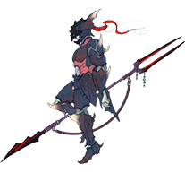

7 |
Prologue and Cast of Characters |
 |
|
The wars of the past have come to a close, the Lunarians and their moon are a distant memory. Peace has returned to the Blue Planet, and former prosperity has been rediscovered. Yet, new winds of change are about to sweep over the land. As the Crystals glow quietly, the dark shadows of the world stir anew. A new moon appears in the sky...
Against the wishes of his mother Queen Rosa, Ceodore, prince of the kingdom of Baron, enlists in the elite Red Wings air force in order to earn his knighthood.
The Red Wings are assaulted by a swarm of monsters. Finding himself the sole survivor, Ceodore is rescued from his ordeal by a wandering swordsman.
Ceodore Prince of the kingdom of Baron, son of King Cecil and Queen Rosa, who once fought to save the world. The castle court holds great expectations for him, but he has doubts about his own abilities. 
Cecil A paladin of Lunarian ancestry. Ascending to the throne of Baron has done nothing to change his concern for his people, and both the military and his citizens trust him deeply. 
Rosa The white mage who serves as Baron's queen and Cecil's steadfast, loving supporter. Her heart goes out to Ceodore as he enters an emotionally turbulent time in his life.

Kain A former dragoon of Baron. He secluded himself atop Mount Ordeals in order to overcome his weaknesses. His whereabouts have since been unknown. 
Cid The kingdom of Baron's airship engineer. Though his beard may now be white, he refuses retirement and continues to demonstrate his prowess on the job. He is well-acquainted with Cecil and the others, and is somewhat of a surrogate grandfather to Ceodore. |
 |
 |
 |